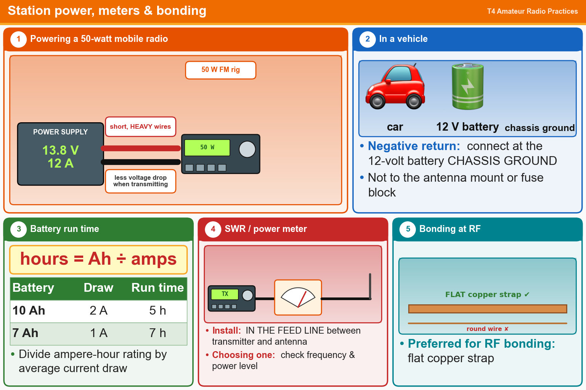

💡 A 50 W radio needs about 13.8 V at 12 A. The meter goes in the feed line. Bond with flat copper strap.
Pick an answer for each question, then press Grade at the bottom.
T4A01
Which of the following is an appropriate power supply rating for a typical 50-watt output mobile FM transceiver?
✘A.24.0 volts at 4 amperes
✘B.13.8 volts at 4 amperes
✔C.13.8 volts at 12 amperes
✘D.24.0 volts at 12 amperes
T4A03
Why are short, heavy-gauge wires used for a transceiver’s DC power connection?
✘A.To avoid RF interference
✘B.To provide a close match to the power supply output impedance
✔C.To minimize voltage drop when transmitting
✘D.To minimize radiative losses in the power cable
T4A11
Where should the negative power return of a mobile transceiver be connected in a vehicle?
✘A.To any metal part of the vehicle
✘B.Through the transceiver’s mounting bracket
✔C.At the 12-volt battery chassis ground
✘D.To the shell of the power connector
T4A09
How can you determine the length of time that equipment can be powered from a battery?
✘A.Divide the watt-hour rating of the battery by the peak power consumption of the equipment
✘B.Multiply the square of the current rating of the battery by the input resistance of the equipment
✔C.Divide the battery ampere-hour rating by the average current draw of the equipment
✘D.Multiply the watts per hour consumed by the equipment by the battery power rating
T4A05
Where should an RF power meter be installed?
✘A.In the power supply cable, as close as possible to the radio
✘B.In parallel with the push-to-talk line and the antenna
✔C.In the feed line, between the transmitter and antenna
✘D.At the power supply output
T4A02
Which of the following should be considered when selecting an accessory SWR meter?
✘A.The ability of the meter to compensate for a poor transmission line match to the antenna
✘B.The distance that the meter will be located from the antenna
✔C.The frequency and power level at which the measurements will be made
✘D.The maximum SWR anticipated on the transmission line
T4A08
Which of the following conductors is preferred for bonding at RF?
✘A.Copper braid removed from coaxial cable
✘B.Copper-clad steel wire
✘C.Twisted-pair cable
✔D.Flat copper strap